Sylvan Road
토클립을 달 수 있는 탭이 있는 클래식 로드 페달. 빈티지 로드 자전거를 복원하거나 클래식한 스타일로 꾸밀 때 가장 먼저 찾는 실반입니다.
- TYPE
- Quill
- USE
- Road
- TOE CLIP
- OK
01
Brand
MKSTokorozawa, Japan · Since 1950
MKS(미카시마 제작소, 三ヶ島製作所)는 1950년 일본 사이타마현 도코로자와에서 시작된 자전거 페달 전문 제조사입니다. 프레임도, 휠도, 부품 전체도 아닌 페달 하나에 집중해 왔고, 지금도 도코로자와의 자체 공장에서 페달을 만듭니다.
MKS의 페달은 화려하지 않습니다. 대신 정확하게 가공된 바디와 스핀들, 손으로 조절하는 컵 앤 콘 베어링, 수십 년이 지나도 분해하고 다시 조립할 수 있는 구조를 갖고 있습니다. 그래서 MKS는 클래식 로드와 투어링 자전거, 픽스드 기어와 일상의 자전거에서 오랫동안 기본처럼 쓰여 왔습니다.
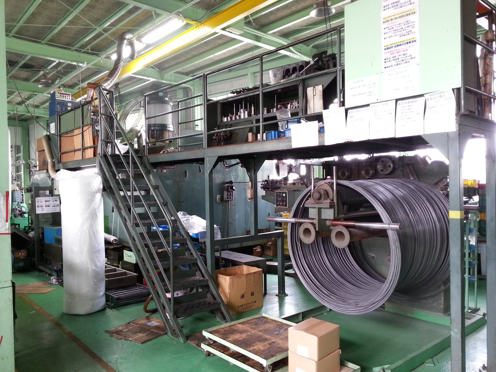
Craft
페달은 자전거에서 가장 많이 밟히고, 가장 자주 부딪히는 부품입니다. MKS는 그래서 소모품이 아니라 정비해서 계속 쓰는 부품으로 페달을 만듭니다. 베어링을 열어 그리스를 다시 채우고, 닳은 부품만 바꾸고, 다시 조여서 탈 수 있도록.
경륜 선수들의 트랙 페달에서 출발한 정밀함은 투어링 페달과 도시용 플랫 페달까지 그대로 이어집니다. 일본의 자전거 장인들과 전 세계의 클래식 자전거 빌더들이 MKS를 고르는 이유입니다.
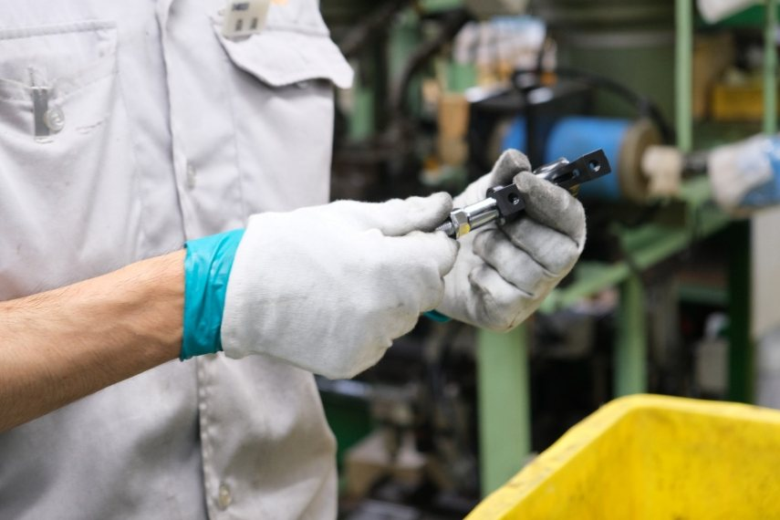
바디와 스핀들을 자체 공장에서 가공합니다. 오차가 적은 부품은 오래 써도 흔들림이 적습니다.
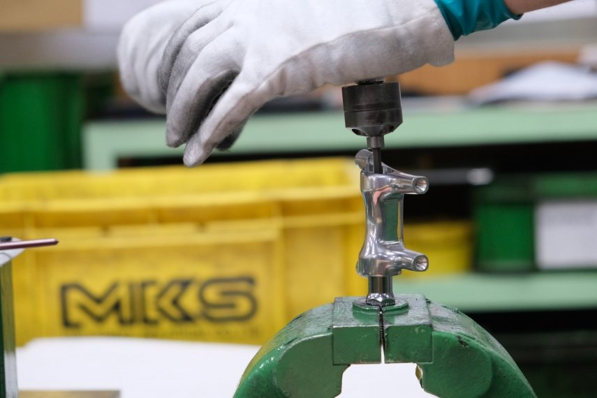
볼 베어링을 손으로 조절하는 전통 구조. 분해하고 그리스를 채워 다시 조일 수 있습니다.
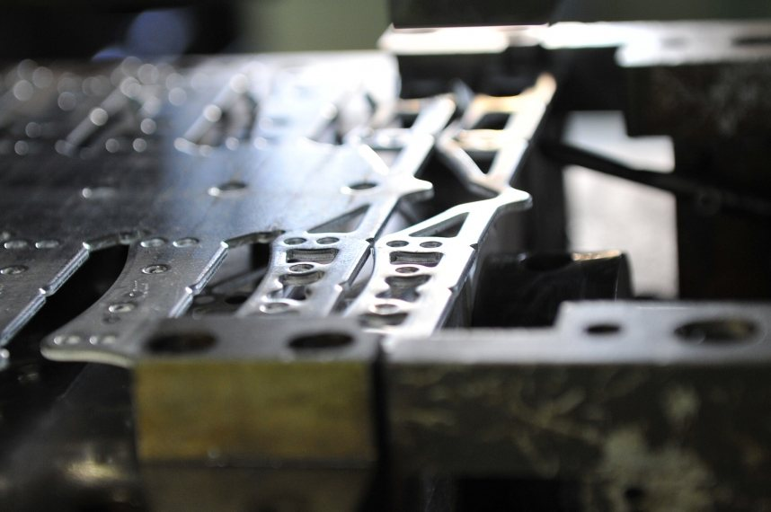
일본 경륜의 엄격한 NJS 규격을 통과한 트랙 페달을 만들어 온 경험이 모든 페달에 담겨 있습니다.
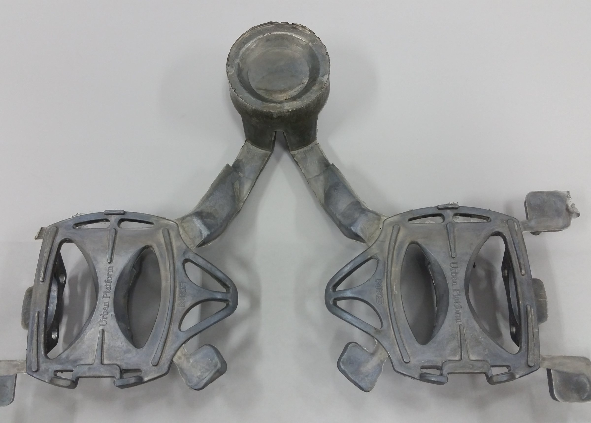
클래식 로드부터 미니벨로, 출퇴근 자전거까지. 어떤 자전거에도 자연스럽게 어울리는 모양입니다.
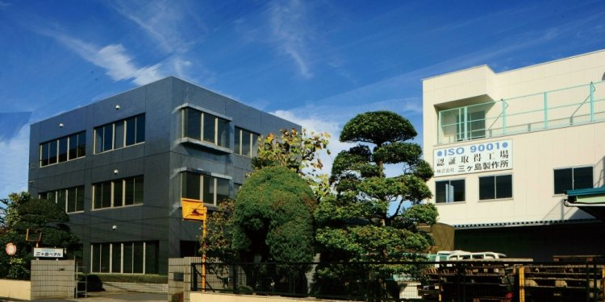
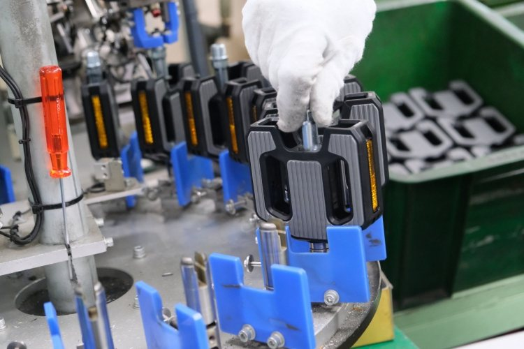
Factory · Tokorozawa, Saitama
도쿄에서 멀지 않은 도코로자와. MKS는 이곳에서 70년 넘게 페달만 만들어 왔습니다.
MKS는 한 가지 부품에 오래 집중해 온 일본 제조업의 전형 같은 회사입니다. 새 모델이 나와도 기본 구조는 크게 바뀌지 않고, 오래전에 산 MKS 페달도 같은 방식으로 정비할 수 있습니다.
쿼일 페달과 토클립의 시대부터 넓은 플랫 페달과 퀵 릴리스 시스템까지, MKS의 라인업은 자전거가 쓰이는 방식에 맞춰 넓어졌습니다. 하지만 잘 돌고, 오래 가고, 고칠 수 있는 페달이라는 원칙은 그대로입니다.
MKS · 미카시마 제작소MKS
The Range
클래식 로드부터 도시의 출퇴근까지, 자전거에 맞는 페달.
토클립과 함께 쓰는 클래식 로드 쿼일 페달. 빈티지 로드와 픽스드 기어의 표준.
양면을 밟을 수 있는 투어링 쿼일 페달. 일반 신발로도 편한 실반.
트랙과 픽스드 기어를 위한 날렵한 실반. 토클립과 스트랩을 단단히 잡아줍니다.
발바닥 전체를 받치는 넓은 양면 플랫폼. 긴 투어링과 일상 라이딩을 위한 페달.
도시와 일상을 위한 플랫 페달과 블록 페달. 운동화, 구두 어떤 신발로도.
공구 없이 페달을 떼고 끼우는 MKS의 퀵 릴리스 시스템. 접이식 자전거와 보관에.
02
Classic Quill
Sylvan실반
실반(Sylvan)은 MKS를 대표하는 쿼일 페달입니다. 얇은 금속 케이지가 신발을 받치고, 그 사이로 바디와 스핀들이 지나가는 전통적인 구조. 빈티지 로드와 랜도너, 픽스드 기어 자전거에 달린 모습이 가장 자연스러운 페달입니다.
쓰임에 따라 로드, 투어링, 트랙 세 가지로 나뉩니다. 로드와 트랙은 토클립과 스트랩을 함께 쓰는 한쪽 면 중심의 페달이고, 투어링은 양면 어느 쪽으로도 밟을 수 있어 일반 신발로 타기 편합니다. 세 모델 모두 컵 앤 콘 베어링으로 분해 정비가 가능합니다.

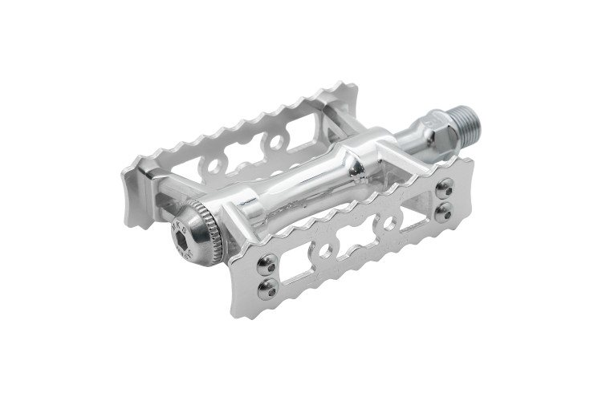
토클립을 달 수 있는 탭이 있는 클래식 로드 페달. 빈티지 로드 자전거를 복원하거나 클래식한 스타일로 꾸밀 때 가장 먼저 찾는 실반입니다.
양면 케이지로 어느 쪽이든 밟을 수 있는 투어링 페달. 운동화로 타는 랜도너, 투어링 자전거, 일상 자전거에 잘 맞습니다.
트랙과 픽스드 기어를 위한 날렵한 실반. 토클립과 스트랩으로 발을 단단히 고정해, 페달을 밀고 당기는 힘을 그대로 전달합니다.
Sylvan · Road · Touring · Track실버
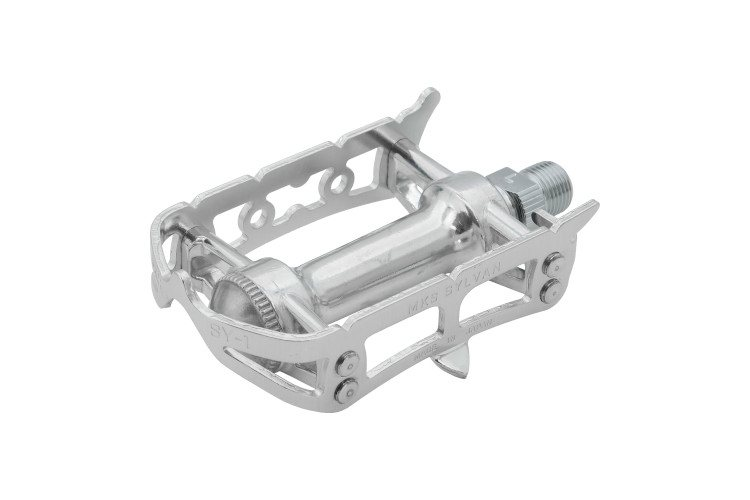
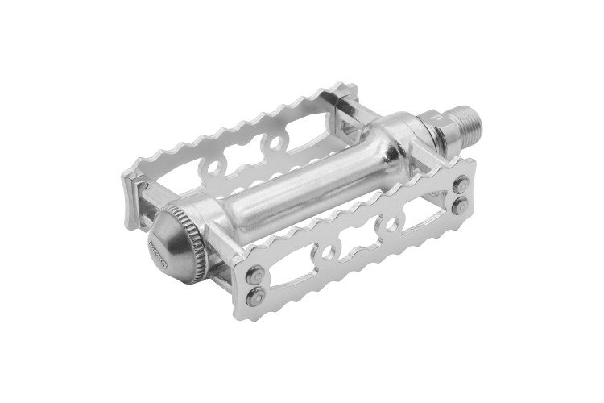
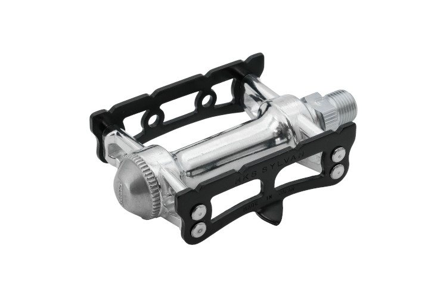
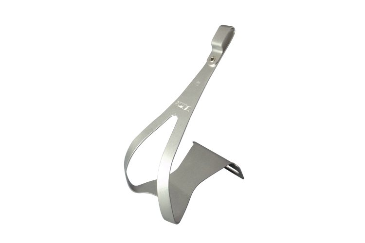
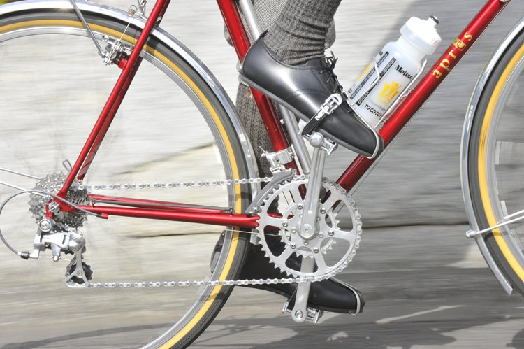
Toe Clips & Straps
실반 로드와 트랙은 토클립과 스트랩을 함께 쓸 때 진가를 발휘합니다. 발을 페달 위 같은 자리에 올려 두고, 밀어내는 힘과 끌어올리는 힘을 함께 쓸 수 있습니다. MKS는 페달에 맞춘 토클립도 함께 만듭니다.
클립리스 페달이 흔해진 지금도 실반과 토클립의 조합을 고르는 라이더가 많습니다. 일반 신발로 탈 수 있고, 자전거의 실루엣을 해치지 않기 때문입니다.
03
Platform · Touring
Lambda람다
람다(Lambda)는 발바닥 전체를 넓게 받치는 양면 플랫폼 페달입니다. 발이 닿는 면이 넓고 가운데가 살짝 솟은 형태라, 클립 없이 일반 신발로 오래 달려도 발이 한 점에 눌리지 않습니다. 미국에서는 '그립 킹(Grip King)'이라는 이름으로도 알려져 있습니다.
장거리 투어링과 바이크패킹, 매일의 출퇴근까지. 클립리스 슈즈를 신지 않는 라이더에게 MKS가 가장 먼저 권하는 페달입니다.


발바닥 전체를 받치는 넓은 면. 힘이 고르게 나뉘어 긴 라이딩에서도 발이 편안합니다.
앞뒤 어느 면으로도 밟을 수 있어 출발과 정차가 잦은 도시 라이딩에서도 편합니다.
운동화, 하이킹 슈즈, 구두까지. 표면의 패턴이 신발 밑창을 안정적으로 잡아줍니다.
MKS의 다른 페달처럼 베어링을 열어 정비할 수 있습니다. 오래 탈수록 진가가 드러납니다.
Lambda · Wide platform실버 · 블랙
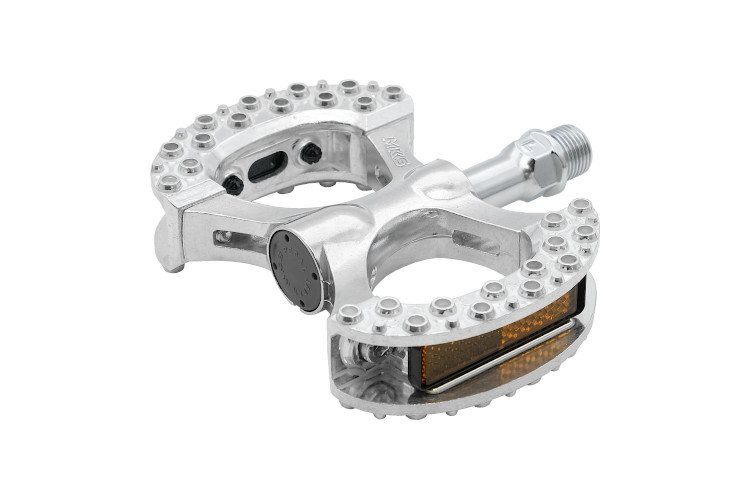
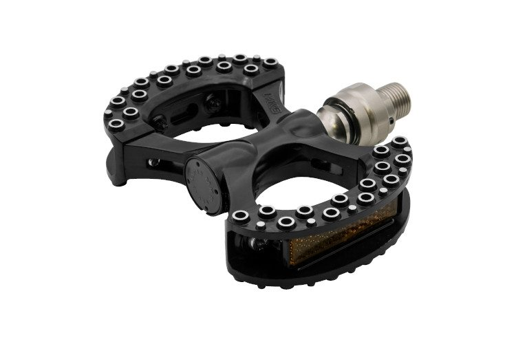


04
City · Everyday
Allways · US-B · GR-9올웨이즈 · US-B · GR-9
출퇴근 자전거와 미니벨로, 접이식 자전거, 장보러 가는 자전거. 매일 타는 자전거에는 신발을 가리지 않고, 올라서기 쉽고, 오래 가는 페달이 필요합니다. MKS의 시티 라인은 그런 자전거를 위해 만들어졌습니다.
깔끔한 양면 플랫 페달 올웨이즈(Allways), 도시용으로 단정하게 다듬은 US-B, 고무 블록의 클래식한 GR-9. 모양은 달라도 MKS의 베어링과 마감은 같습니다.
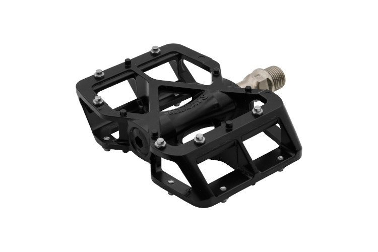
매일 쓰는 자전거를 위한 양면 플랫 페달. 단정한 모양과 넓은 발판으로 어떤 자전거에도 잘 어울립니다.
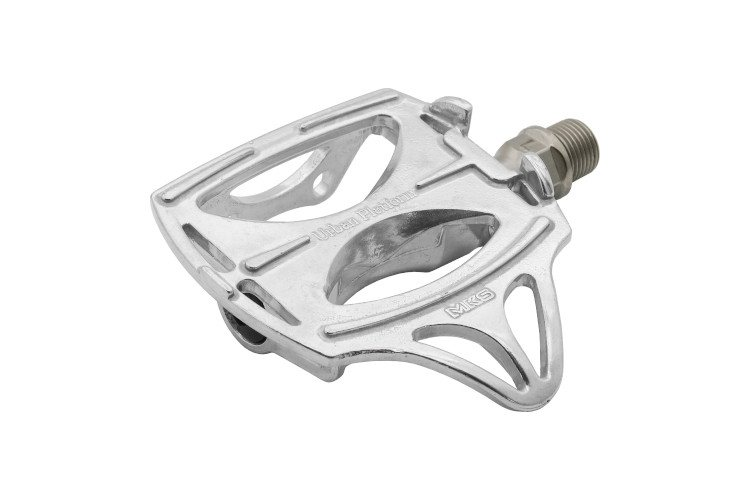
도시 라이딩을 위해 다듬은 플랫 페달. 미니벨로와 시티 바이크에 가볍고 깔끔하게 어울립니다.
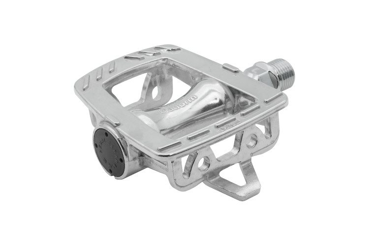
고무 블록을 끼운 클래식 블록 페달. 구두나 가죽 밑창도 미끄러지지 않고 발에 부드럽게 닿습니다.

For every day
페달은 자전거에서 몸이 닿는 세 곳 중 하나입니다. 안장과 핸들만큼 페달이 바뀌면 자전거의 느낌이 달라집니다. 부드럽게 도는 베어링, 미끄러지지 않는 발판, 오래 써도 헐거워지지 않는 구조.
MKS의 시티 페달은 EZY 버전으로도 만들어져, 접이식 자전거를 접거나 좁은 곳에 보관할 때 페달을 떼어 둘 수 있습니다. 모델별 EZY 버전 여부는 루비워크샵에 문의해 주세요.
05
Quick Release
EZY System이지 시스템
EZY는 MKS가 만든 페달 퀵 릴리스 시스템입니다. 크랭크에 전용 어댑터를 달아 두면, 페달을 공구 없이 손으로 빼고 다시 끼울 수 있습니다. 끼울 때는 밀어 넣기만 하면 잠기고, 뺄 때는 슬리브를 당겨 분리합니다.
접이식 자전거를 더 작게 접을 때, 자동차나 기차에 자전거를 실을 때, 좁은 현관이나 벽에 자전거를 보관할 때 페달이 튀어나오지 않습니다. 한 쌍의 어댑터로 여러 EZY 페달을 바꿔 달 수도 있습니다.

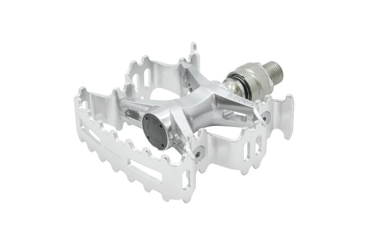
크랭크에 EZY 어댑터를 한 번만 달아 둡니다. 일반 페달과 같은 방식으로 장착합니다.
페달을 어댑터에 밀어 넣으면 딸깍하고 잠깁니다. 라이딩 중에는 단단히 고정됩니다.
슬리브를 당기면 페달이 빠집니다. 공구도, 힘도 필요 없습니다.
EZY · Tool-free어댑터 · 페달
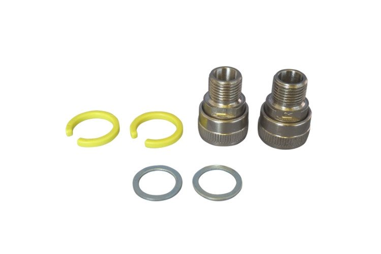
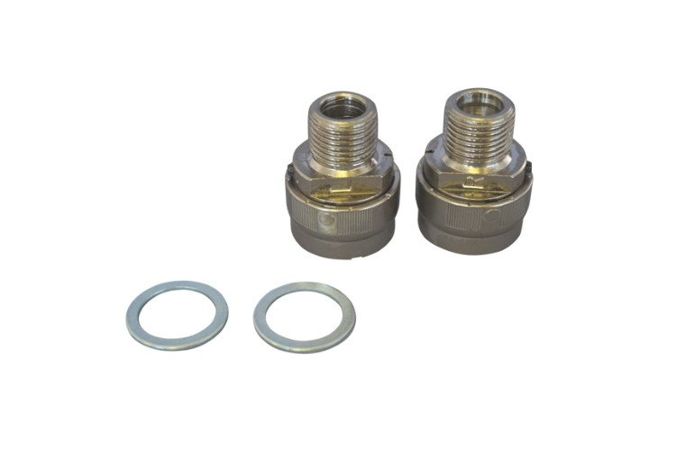
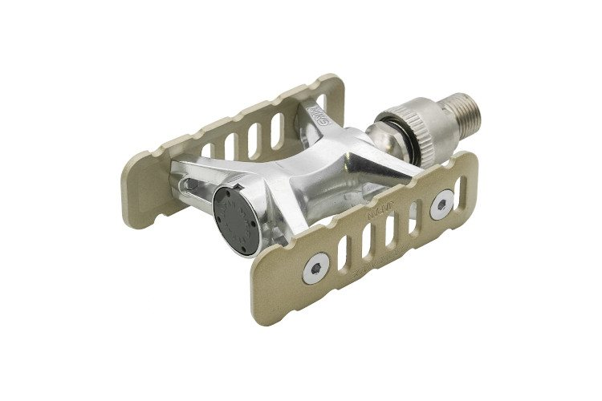
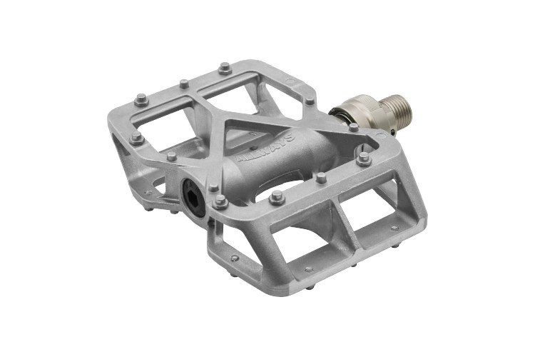
06
Pedal Guide
자전거와 신발, 타는 방식으로 고르는 MKS 페달
| 모델 | 형태 | 추천 자전거 | 잘 맞는 신발 |
|---|---|---|---|
| Sylvan Road | 쿼일, 토클립 장착 | 클래식 로드, 빈티지 복원 | 토클립 + 일반 신발, 슬림한 슈즈 |
| Sylvan Touring | 양면 쿼일 | 투어링, 랜도너, 일상 자전거 | 운동화, 일반 신발 |
| Sylvan Track | 쿼일, 토클립 장착 | 트랙, 픽스드 기어 | 토클립과 스트랩 |
| Lambda | 양면 와이드 플랫폼 | 투어링, 바이크패킹, 출퇴근 | 운동화, 하이킹 슈즈 |
| Allways | 양면 플랫 | 시티 바이크, 미니벨로 | 어떤 신발이든 |
| US-B | 양면 플랫 | 시티 바이크, 미니벨로 | 어떤 신발이든 |
| GR-9 | 러버 블록 | 클래식 시티 바이크, 투어링 | 구두, 가죽 밑창 |
| EZY | 퀵 릴리스 시스템 | 접이식 자전거, 실내 보관 | 모델에 따라 다름 |
MKS 페달은 대부분 일반 3피스 크랭크의 9/16인치 규격입니다. 아동용 자전거나 일부 일체형 크랭크(1/2인치)는 규격이 다르니 장착 전에 확인해 주세요. 자전거에 맞는 모델이 궁금하다면 루비워크샵에 자전거 사진과 함께 문의해 주세요.
07
Story
1950 ~ 2026Tokorozawa · Japan
전후 일본의 자전거 산업이 다시 일어서던 1950년, 미카시마 제작소는 도코로자와에서 페달을 만들기 시작했습니다. 일본 경륜의 트랙 페달, 클래식 로드의 실반, 투어링의 람다, 도시의 플랫 페달과 EZY까지. MKS의 역사는 일본 자전거 문화의 변화와 함께해 왔습니다.
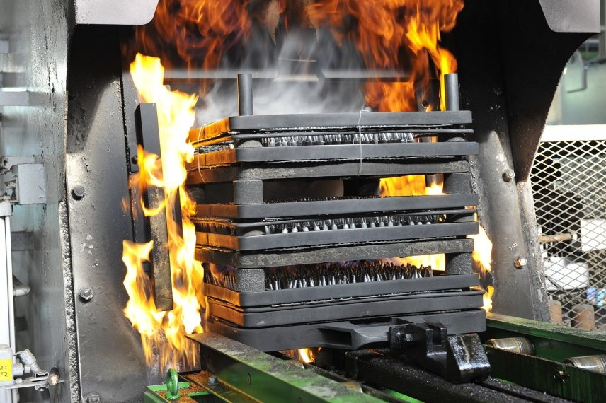
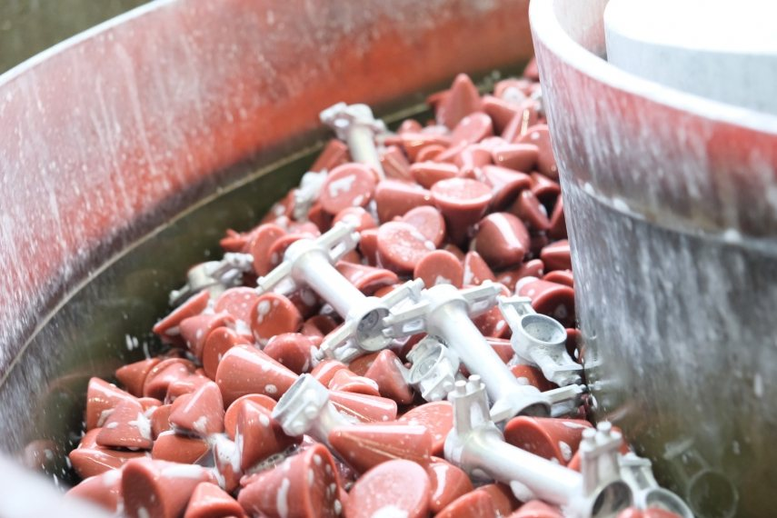
사이타마현 도코로자와에서 미카시마 제작소가 문을 엽니다. 처음부터 자전거 페달이 중심이었습니다.
일본 경륜의 NJS 규격 트랙 페달을 만들며, 선수들의 엄격한 기준에 맞는 정밀함을 쌓습니다.
로드, 투어링, 트랙의 실반 시리즈가 MKS를 대표하는 페달이 되고, 전 세계 클래식 자전거의 표준이 됩니다.
일반 신발로 멀리 가는 라이더를 위한 넓은 플랫폼 페달 람다가 투어링 라이더들의 사랑을 받습니다.
공구 없이 페달을 떼고 끼우는 EZY 시스템으로 접이식 자전거와 도시의 자전거에 새로운 편리함을 더합니다.
루비컴퍼니가 MKS를 한국에 소개합니다. 루비워크샵에서 MKS 페달을 직접 보고 고를 수 있습니다.
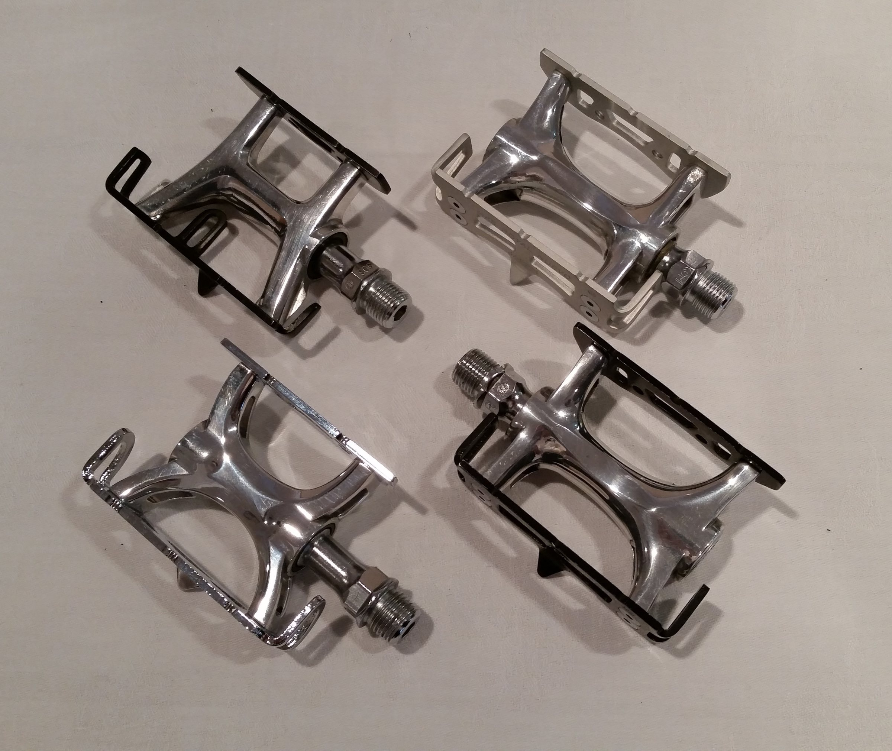
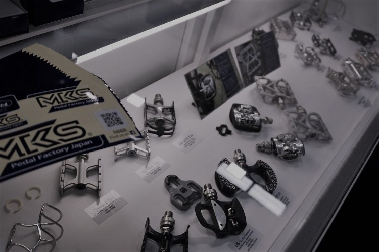
08 · Showroom
페달은 직접 손으로 돌려봐야 압니다. 루비워크샵에서 MKS 페달을 직접 보고, 자전거와 신발, 타는 방식에 맞는 모델을 함께 찾아드립니다. 장착과 베어링 정비도 맡겨 주세요.
For Dealers
MKS의 한국 공식 디스트리뷰터는 루비컴퍼니의 B2B 채널 루비서플라이입니다. 매장 입점과 거래 조건은 루비서플라이로 문의해 주세요.